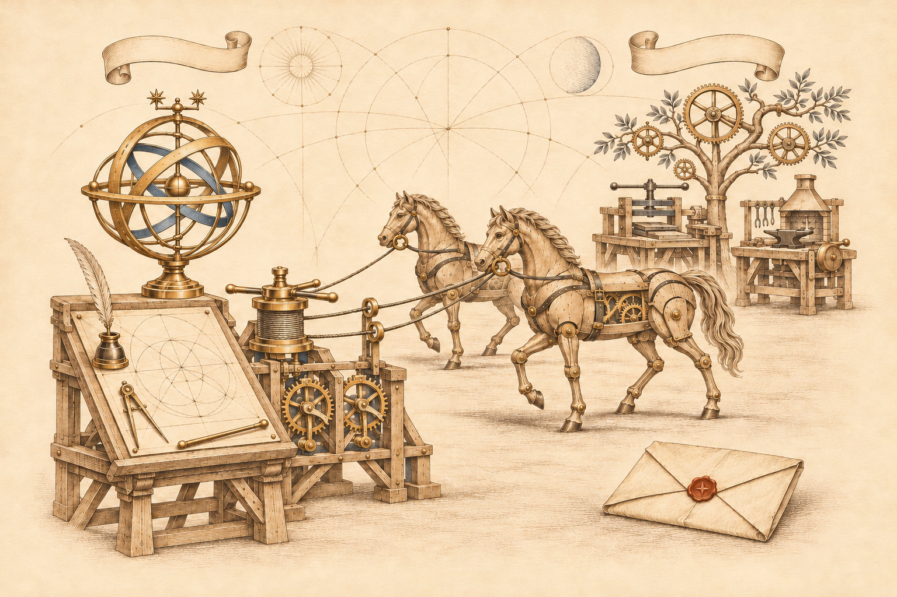

架构师 · Gemini
阅读仓库、厘清设计并撰写 spec.md；任务完成后独立审查真实的 git diff 并重新运行验收测试。
卷一 · 异步双脑编排
Gemini 在 Antigravity 中写清规格，本地 Codex CLI 在独立 Git worktree 中自主实现；零依赖 MCP stdio 服务端后台接管执行，完成后自动唤醒验收，空闲零轮询、零 token 消耗。
空闲零 token · 完成即唤醒

background: alwaysreport.schema.json卷二 · 图版壹
架构师先与用户敲定目标与方案，再经由MCP 服务端把任务派发给本地 Codex；执行完成后自动带回精简结果，供架构师独立验收。
codex exec 或 codex exec resume（传入 --json、--output-schema report.schema.json 与全权限参数），实时把事件流落盘；任务结束后返回结构化报告、Git 摘要与日志路径，触发 Antigravity 自动唤醒 Gemini。阅读仓库、厘清设计并撰写 spec.md；任务完成后独立审查真实的 git diff 并重新运行验收测试。
在指定目录或独立 worktree 中按规格实现并自测，按 report.schema.json 输出结构化报告；需要返工时沿用原会话上下文继续修改。
卷三 · 图版贰
Antigravity 在后台托管派发与续接。派发完成后直接结束当前轮次，或继续处理其他事项，等待结果自动送达即可。
Gemini 先通读仓库，再撰写包含目标、上下文、详细规格、约束、验证命令与验收标准的六段式 Markdown 规格书。
调用 codex_dispatch（background: "always"）；并行修改同一仓库时开启 use_worktree: true，并把任务 ID 和分支同步给用户。
Codex 在后台自主编码并执行验证；Gemini 结束本轮等待，不轮询状态、不设休眠也不开定时检查。
Codex 执行结束后，Antigravity 自动唤醒 Gemini，交回结构化 JSON 报告与 git.diff_stat 摘要。
检查真实 diff 并独立复跑测试。验收通过后先合并改动，再调用 codex_cleanup_worktree 清理；若有缺陷，用 codex_resume 发送具体修改意见，保留原会话记忆继续返工。
卷四 · 图版叁
六个工具均配置 eager: true，异步后台模式由 Antigravity 客户端控制。点击标签可查看各工具的参数说明、调用示例与返回结构。
codex_dispatchbackground: always
codex_resumebackground: always
codex_statusbackground: off
codex_cancelbackground: off
codex_cleanup_worktreebackground: off
codex_monitorbackground: off
将一份自洽完整的 Markdown 任务规格派发给本地 Codex 执行，默认直接修改当前工作目录。
| 参数 | 用途 |
|---|---|
workdir | 必填，目标工作目录的绝对路径。 |
spec / spec_file | 任务规格的 Markdown 正文，或规格文件的绝对路径（二选一）。 |
task_id | 可选，任务唯一标识；省略时由服务端自动生成。 |
use_worktree / base_ref | 是否创建独立 Git worktree（默认 false）及其基准引用（默认 HEAD）。 |
model / reasoning_effort | 可选，临时覆盖 Codex 模型与推理强度。 |
extra_writable_dirs | 可选，透传给 Codex --add-dir 的额外可写目录。 |
{
"name": "codex_dispatch",
"arguments": {
"workdir": "/home/dev/project",
"spec_file": "/home/dev/specs/task-a.md",
"task_id": "task-a",
"use_worktree": true
}
}{
"task_id": "task-a",
"round": 1,
"status": "completed",
"report": {
"status": "completed",
"summary": "补充了 CLI 文档。",
"files_changed": [
"README.md"
],
"commands_run": [
"git diff --check（通过）"
],
"tests_summary": "差异空白检查通过。",
"open_issues": []
},
"git": {
"branch": "codex/task-a",
"diff_stat": "README.md | 2 ++"
}
}同一仓库并行派发多个任务时，必须开启 use_worktree: true。
携带具体审查意见续接原 Codex 会话，保留上下文记忆并在原工作目录继续修改。
| 参数 | 用途 |
|---|---|
task_id | 复用先前任务的会话 ID 与工作目录。 |
session_id / workdir | 省略 task_id 时，显式指定会话 ID 与工作目录。 |
feedback / feedback_file | 具体的修改意见正文，或 Markdown 反馈文件路径（二选一）。 |
model / reasoning_effort | 可选，临时覆盖 Codex 模型与推理强度。 |
{
"name": "codex_resume",
"arguments": {
"task_id": "task-a",
"feedback": "请在 README.md 中补充配置路径。"
}
}{
"task_id": "task-a",
"round": 2,
"status": "completed",
"git": {
"branch": "codex/task-a",
"diff_stat": "README.md | 3 +++"
}
}反馈直接写明文件与行号、失败测试输出及预期行为。
查看单个任务详情或列出近期任务，仅在用户明确询问进度或事后排查时单次调用。
| 参数 | 用途 |
|---|---|
task_id | 查看指定任务状态、近期事件与 stderr 末尾日志。 |
limit | 省略 task_id 时限制返回条数，默认 20 条。 |
{
"name": "codex_status",
"arguments": {
"task_id": "task-a"
}
}{
"task_id": "task-a",
"status": "running",
"alive": true,
"round": 1,
"last_event": "turn.started"
}仅用于单次排查；正常执行无需轮询，完成后会自动唤醒。
立即终止运行中的 Codex 进程组（先发送 SIGTERM，超时后补发 SIGKILL）。
| 参数 | 用途 |
|---|---|
task_id | 必填，需要终止的运行中任务 ID。 |
{
"name": "codex_cancel",
"arguments": {
"task_id": "task-b"
}
}{
"task_id": "task-b",
"cancelled": true,
"message": "Terminated running Codex process."
}取消仅终止进程，此前写入工作目录的改动会保留。
在验收合并或明确放弃改动后，移除任务对应的托管 Git worktree。
| 参数 | 用途 |
|---|---|
task_id | 必填，对应托管 worktree 的任务 ID。 |
delete_branch | 是否同时删除对应的 codex/<task_id> 分支，默认 false。 |
force | 强制移除 worktree（搭配 delete_branch 时强删未合并分支），默认 false；可能丢弃未提交改动。 |
{
"name": "codex_cleanup_worktree",
"arguments": {
"task_id": "task-a",
"delete_branch": true
}
}{
"task_id": "task-a",
"cleaned": true,
"branch_deleted": true
}验收通过后，先合并分支再清理 worktree。
在 Antigravity App 侧栏或整页查看运行中和近期任务，也可读取结构化快照，查看实际使用的模型、推理强度、已用时间和近期活动。模型与推理强度逐项取值，先看当前轮 rollout 的 turn_context，再看 codex_dispatch 或 codex_resume 显式传入的值、上一轮的值，最后查项目和用户的 .codex/config.toml。看板会标出与配置默认值不同的设置。
| 参数 | 用途 |
|---|---|
task_id | 可选，指定要查看的任务。 |
limit | 可选，限制返回的任务数。须为非负整数，默认 20。 |
{
"jsonrpc": "2.0",
"id": 1,
"method": "tools/call",
"params": {
"name": "codex_monitor",
"arguments": {"task_id": "task-a", "limit": 5}
}
}{
"structuredContent": {
"active_count": 1,
"selected_task": {
"task_id": "task-a",
"status": "running",
"effective_model": "gpt-6.2-sol",
"effective_reasoning_effort": "high",
"model_source": "runtime_rollout",
"config_reasoning_effort": "xhigh",
"elapsed_seconds": 42.3,
"current_activity": "▶ python3 -m unittest"
}
}
}在 Antigravity App 侧栏打开实时看板，有任务运行时每 2 秒经 tools/call 刷新，空闲时每 8 秒刷新，不消耗模型 token。
卷五 · 图版肆
开启隔离后，每项任务都在独立的 Git worktree 与专属分支中执行；运行记录按轮次保存规格、反馈、事件流、日志与交付报告。
stderr-r1.log；若验收后需要返工，会按轮次继续生成 feedback-r2.md、events-r2.jsonl 与 report-r2.json。可通过 CODEX_CASTOR_STATE_DIR 自定义状态目录，通过 CODEX_BIN 指定本地 Codex 可执行文件。服务端从 rollout 日志实时读取模型与推理强度，把活动写入 meta.json，并按客户端设置发送 MCP 进度与日志通知。报告 Schema 定义六项交付字段。Antigravity App 通过 ui://codex-castor/monitor.html 打开看板。
约束架构师撰写自洽规格、异步派发、独立验收与返工的标准操作流程。
Antigravity 的角色分工规则、MCP 注册配置以及各工具的后台运行模式。
安装、卸载、MCP 握手诊断和单元测试。终端看板可跟踪实时事件（--follow），Antigravity CLI 状态栏可显示运行中的任务。
卷六 · 图版伍
运行前需准备好 Python 3.9+、Git、已登录的本地 Codex CLI 以及 Antigravity，随后在终端依次执行：
克隆仓库并执行安装脚本。如需在 Antigravity CLI 内置状态栏下方显示运行中的任务，安装时加 --install-statusline。安装后重新加载 Antigravity。
git clone https://github.com/JAY201368/codex-castor.git && cd codex-castor && ./scripts/install.sh在仓库目录中检查配置与依赖，并实测一次 MCP stdio 握手。
python3 scripts/doctor.py移除安装器写入的 MCP 配置、技能与规则块；如需一并清除历史运行记录，再附带 --purge-state。
python3 scripts/install.py --uninstall